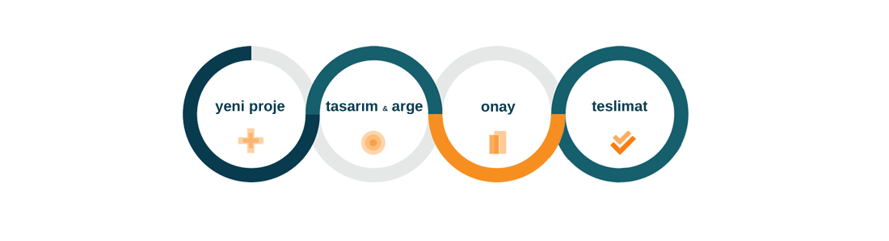

Tasarım ve Mühendislik

Otomasyon Sistemleri
Endüstriyel otomasyon sistemleri, endüstriyel robot sistemlerinde olduğu gibi fabrikaların üretim ,kalite ,verim ve zaman gibi en önemli olmazsa olmazlarının sürdürülebilir olmasını sağlayan sistemlerdir. Çağımız gereklerine uyum sağlayan, dünya markaları ile yarışır seviyede doğru kalitedeki ürünü doğru zamanda ve iyi bir fiyat ile pazara sunabilmek için otomasyon sistemlerine ülke olarak gereken önemi vermenin tam zamanıdır.Otomasyon sistemleri iyi bir tasarım ve planlı bir programlama ile kullanıcı dostu sistemler olabilmektedir.
